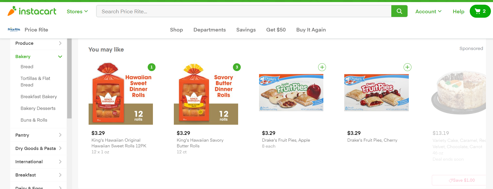
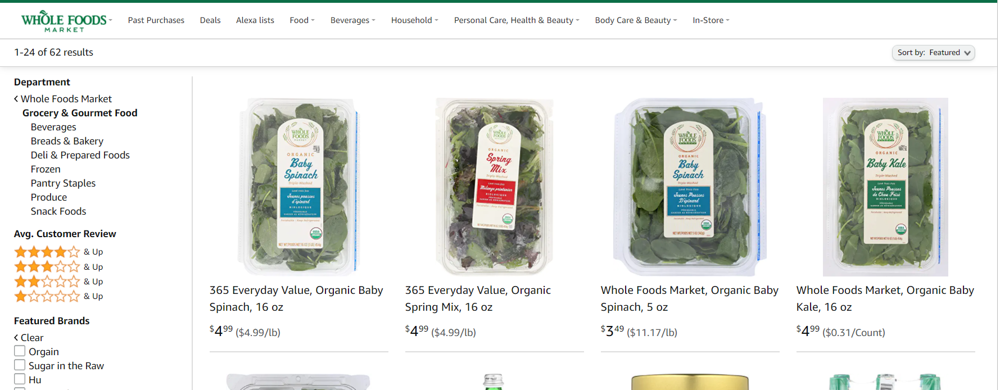

Goal
When it comes to online shopping, most users looks for 2 things:
- Find specific items as per their need.
- Hassle free quick shopping without having to click too many things or navigate to a bunch of pages.
I then checked what two of the most popular online grocery stores offer.
Instacart

- Instantly add products to the cart without routing to a different page.
- You can increment or decrement on the product card itself.
- You can filter through different categories like Pantry,Breakfast,Bakery ,etc. and sub-categories like Bread,Tortillas,Buns ,etc.
Whole Foods

- Similar to Instacart in terms of filtering through different categories and sub-categories.
- Add to Cart feature is not very direct. You have to first click on the product item which navigates you to the product page where you can add to cart and then return back to the previous page by hitting the 'Back' button.
Neither of these websites offer the feature to let health conscious users select specific food items based on their nutrition diet.
Also,I liked Instacart's usability better than Whole Food's as users would generally prefer having the option of instantly adding to cart.
My goal is to build an online grocery store that facilitates quick shopping targetting user's diet needs.
Value
The Nielsen study indicates that consumers are looking for functional foods that can either reduce the risk for disease or promote good health.
Among respondents with weight-loss goals, 83 percent of North Americans changed their diet and 74 percent engaged in physical activity to lose weight.
This indicates that diet and exercise are the two leading influencers when it comes to managing weight and health.
The study also looked at how people changed their diet to lose weight. 59 percent of North Americans cut down on fat, chocolate and sugar and 60 percent ate more fresh and natural foods.
Farm Fresh lets users filter through their specific diet needs and makes the overall shopping process quick and efficient.
Usability
- The filters are clearly labeled so the users can easily understand their functionality. The are two types of filters.
- Type - Lets users filter by type depending on what they wish to buy - Fruits, Vegetables, or Nuts.
- Nutrients - Lets users filter by nutrients depending on their diet needs - Fiber, Vitamins, Good Fats, Carbs.
- The sort feature helps users filter products based on their price needs.
- The product card lets the user increment/decrement items and add them on cart right on the spot instead of having them navigate elsewhere.
- User can reset all their filters with the reset button
- Each time a product is added to the cart, the 'Add to Cart' button changes color and the 'Cart' button buzzes. This is to notify the user that their cart has been updated
- The user can get a quick zoom view of the product on the same page by clicking on the product, without navigating elsewhere.
Links
Here's the link to my github repo. Checkout my website here